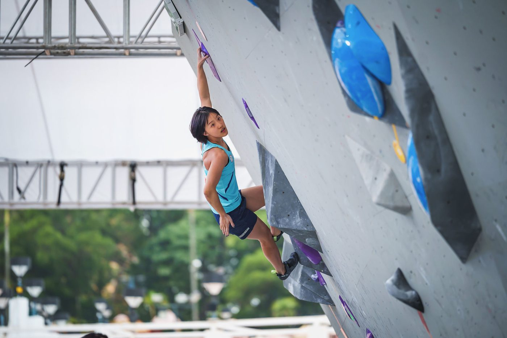

01我的故事
與姚廷蓁共同攀登巔峰，成為台灣攀岩界的合作夥伴
作為台灣頂尖的攀岩選手，姚廷蓁擁有十年攀岩經驗及四年國際賽事歷程，她在競技場上的每一次突破都代表著對極限的挑戰。
現在，您有機會成為她背後的支持力量，攜手共創更大的榮耀。

與姚廷蓁共同攀登巔峰，成為台灣攀岩界的合作夥伴
作為台灣頂尖的攀岩選手，姚廷蓁擁有十年攀岩經驗及四年國際賽事歷程，她在競技場上的每一次突破都代表著對極限的挑戰。
現在，您有機會成為她背後的支持力量，攜手共創更大的榮耀。

歷屆成績 · 更新於 2026/02/11
世界攀岩之旅：賽後心得與未來方向
訓練與參賽計畫
高強度與恢復並行：
－專項技術訓練，確保攀登技巧與比賽實戰能力累積。
－體能、力量與心理訓練，確保身體與心態維持穩定。
多樣化場地訓練：
－透過不同岩館的攀登環境，提升適應能力與技術靈活性。
－強化各類型岩館的競技策略，確保在國際賽事中具備優勢。
持續優化與調整：
－依比賽行程與身體狀態，適時調整訓練內容與負荷量。
－藉由影片分析與動作調整，提高技術細節與比賽策略應用能力。
這套計畫將確保技術、體能與心理素質同步提升，為2026年亞洲運動會的目標打下堅實基礎。
2025年全國性單項錦標賽與各國單項公開賽－冠軍。
2026年將以爭取亞洲運動會資格及奪牌為主要目標，預計2026年亞洲錦標賽奪牌、2026年亞洲運動會奪牌、2026年IFSC世界盃總排名前40名，同時持續參與2026年全國性單項錦標賽及各國單項公開賽。
我想達到…
每年11月～翌年3月，建立基礎體能與力量，修正動作、累積肌力、核心穩定及柔軟度。
4月～10月，提升專項技術、身體反應速度、爆發力與比賽穩定度。
10月～11月，分析調整賽季成果、身心調整、恢復疲勞、修正受傷部位。
肌力與肌耐力訓練（重量訓練、引體向上變化、負重深蹲）、懸吊核心訓練（L-sit、前水平）、動態核心控制（物理治療師配合REDCORD訓練）。
Hangboard訓練、Campus Board訓練、單手負重抓握訓練、腳步精準度與站立技術、身體重心轉移與協調。
無手攀爬訓練、小點站立與重心轉移練習、動態動作訓練、Dyno（動態跳攀）訓練、側擺與腳法技巧應用。
影片分析、比賽策略制定與高難度路線閱讀，透過不同場地與路線風格，提升適應能力與技術變化。
強化意象訓練、心理調適與戰術應用
需求項目與數量（依官方頁面）
| 教練指導費 | NT$ 192,000 |
| 運動科學支援費 | NT$ 43,200 |
| 訓練器材裝備費 | NT$ 9,600 |
| 參賽報名費 | NT$ 12,000 |
| 移地訓練費 | NT$ 100,000 |
| 參賽旅運費 | NT$ 120,000 |
| 經費需求合計 | NT$ 476,800 |
標示「不公開」者為官方頁面未揭露之欄位。
網路公開搜尋結果，均附原始出處
運動攀登選手姚廷蓁在亞洲錦標賽女子抱石第8名取得名古屋亞運個人席次，卻因國內決議不派隊而無法參賽，自費投入逾百萬元。
出處：https://www.nownews.com/news/6856290報導台灣3名攀岩選手（含姚廷蓁）取得亞運席次卻不獲派隊的席位制爭議。
出處：https://www.nownews.com/news/6856281姚廷蓁指稱報名截止後才得知運動部不派隊參加名古屋亞運。
出處：https://news.pts.org.tw/article/817432整理姚廷蓁與教練及運動部對攀登項目不派隊的各自說法。
出處：https://www.nownews.com/news/6856627報導姚廷蓁等攀岩選手抗議未獲派隊參加名古屋亞運。
出處：https://today.line.me/tw/v3/article/YaKo8vB